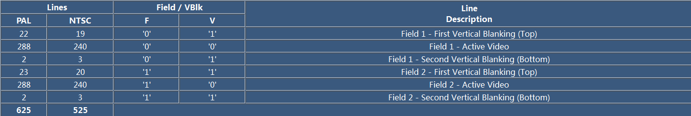
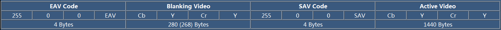
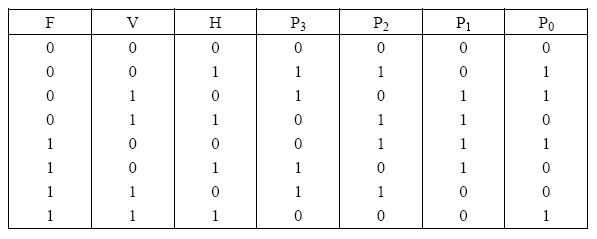
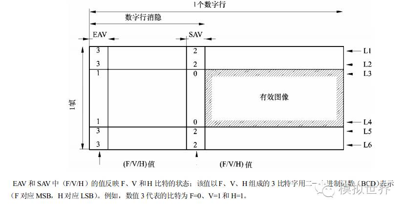

8.8.5. BT656
8.8.5.1. 基本概念
帧
一个视频序列是由N个帧组成的，采集图像的时候有两种扫描方式，一种是逐行扫描(progressive scanning),一种是隔行扫描(interlaced scanning).对于隔行扫描， 每一帧一般有两个场(field),一个叫顶场(top filed),也叫偶场，一个叫底场(bottom field),也叫奇场．
场
BT656标准中，一个场由三个部分组成
场 = 处置消隐顶场(First Vertical Blanking) + 有效数据行(Active Video) + 垂直消隐底场(Second Vertical Blanking)
对于顶场，有效行数据就是所有的偶数行，而底场，有效行数据就是所有的奇数行．顶场和底场的空白行的个数也有所不同，对于一个标准的8 bit Bt656(4:2:2) SDTV视频而言， 其格式定义如下

由上图可知，对于PAL制式，每一帧有625行，其中顶场有288行，底场有效行数据也是288行，其余行皆为垂直消隐信号．因为PAL制式的SDTV分辨率为720*576.
上图中F标记奇偶场，V标记是否为垂直消隐信号
行
一行由四个部分组成
行 = 结束码(EAV) + 水平消隐(Horizontal Vertical Blanking) + 起始码(SAV) + 有效数据(Active Video)

EAV和SAV的四个字节格式规定为 FF 00 00 XY ,前三个字节是固定的，最后一个字节根据场，消隐信息而定，其8bit定义为 1 F V H P3 P2 P1 P0
备注
F标记场信息，顶场为0,底场为1,V标记消隐信息，传输消隐数据时为1,传输有效视频数据时为0．H标记EAV还是SAV,SAV为0,EAV为1, P0-P3为保护bit,其值取决于FHV起到校验作用

总结如下

硬件接口
BT.656输入接口有一根pixel_CLK时钟信号(27M), 8根YUV的数据信号
8.8.5.2. BT656 VS BT601
BT601是16位数据传输，Y U V信号同时传输，是并行数据，行场同步信号单独输出, 21芯
BT656是8/10位数据传输，不需要硬线同步信号，先传Y后传UV，行场同步信号嵌入在数据流中, 9芯
8.8.5.3. NTSC VS PAL
PAL每秒25帧，奇场在前，偶场在后，分辨率为720*576, 24bit的色彩位深，画面宽高比为4:3
NTSC每秒30帧，分辨率为720*486
8.8.5.4. BT601 VS BT709 VS BT2020
一般而言，BT601针对标清视频，BT709针对HD高清视频，BT2020针对超高清视频
RGB转BT601 YUV
Y = 0.257R + 0.504G + 0.098B + 16
Cb = -0.148R - 0.291G + 0.439B + 128
Cr = 0.439R - 0.368G - 0.071B + 128
BT601 YUV转RGB
R = 1.164(Y-16) + 1.596(Cr-128)
G = 1.164(Y-16) - 0.391(Cb-128) - 0.813(Cr-128)
B = 1.164(Y-16) + 2.018(Cb-128)
这里的yuv是局部色域的，如果是全色域，转换公式如下
R = Y + 1.402(Cr-128)
G = Y - 0.344(Cb-128) - 0.714(Cr-128)
B = Y + 1.772(Cb-128)
RGB转BT709 YUV
Y = 0.183R + 0.614G + 0.062B + 16
Cb = -0.101R - 0.339G + 0.439B + 128
Cr = 0.439R - 0.399G - 0.040B + 128
BT709转RGB
R = 1.164(Y-16) + 1.793(Cr-128)
G = 1.164(Y-16) - 0.213(Cb-128) - 0.533(Cr-128)
B = 1.164(Y-16) + 2.112(Cb-128)
这里的YUV是局部色域的，如果是全色域，则转换公式如下
R = Y + 1.280(Cr-128)
G = Y - 0.215(Cb-128) - 0.381(Cr-128)
B = Y + 2.128(Cb-128)